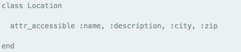
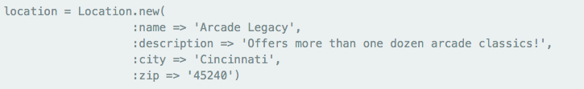
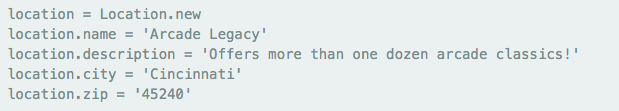
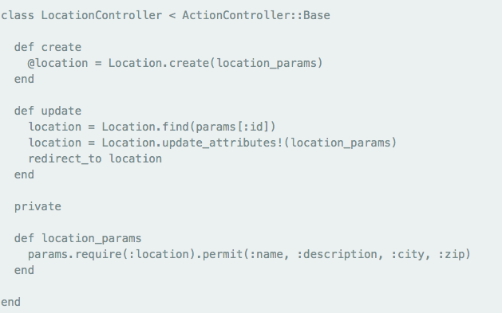
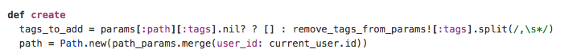

Background
Like my post on Rails form helpers, this is a long overdue post. I've been busy with learning Javascript, Java, and other non-programming things lately that when I started doing some personal projects in Rails, I realized I forgot some of the essentials. This post will give me something to reference should I forget again. Most examples come from Jason Gilmore.
Attr_accessible
In prior Rails versions, Attr_accessible allowed users to mass-assign model attributes. Take a look at the code snippets below.
Model:
Controller Action:
W/o the ability to mass-assign attributes, you would have had to manually assign attributes as so:
Strong Parameters
In Rails 4 attr_accessible is deprecated. Instead we use something called strong parameters. Instead of mass-assigning attributes in the model, you move the responsibility into the controller via a private method as so:
You can even customize specific methods in your strong params. The example below is assigning user_id attribute of Path model to a helper method current user.
